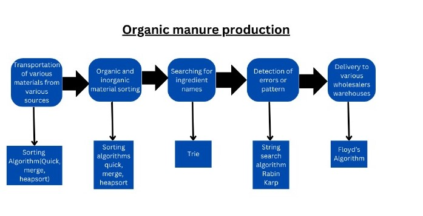

Public food delivery service can be directly linked to SGG 2(Zero hunger) and also SDG 11.1 which aims that by 2030, ensure access for all to adequate, safe and affordable housing and basic services and upgrade slums and 11.2 which says By 2030, provide access to safe, affordable, accessible, and sustainable transport systems for all.
The above buisness supports this goal as:
SDG 11.3.2 states that Proportion of cities with a direct participation structure of civil society in urban planning and management that operate regularly and democratically.
This supports this goal by:
The business idea can be linked by the SDG 11.6 and 11.6.1 which aims that by 2030 reduce the adverse per capita environmental impact of cities, including by paying special attention to air quality and municipal and other waste management and Proportion of municipal solid waste collected and managed in controlled facilities out of total municipal waste generated, by cities respevtively.
It can facilitate the goal as follows:
It directly supports the SDG 11.5 which says that Significantly reduce the number of deaths and the number of people affected by disasters, and substantially decrease the direct economic losses relative to global GDP caused by disasters. Promotes the target 11.b which says that Increase the number of cities and human settlements adopting and implementing integrated policies and plans towards inclusion, resource efficiency, mitigation, and adaptation to climate change.
The idea contributes to this by:
It primarily focuses on SDG 6(clean water and sanitation) but also aligns to SDG 11.1 and 11.2 which says that by 2030 ensure access for all to adequate, safe and affordable housing and basic services and upgrade slums and provide access to safe, affordable, accessible, and sustainable transport systems for all.
Water transportation services contribute to this by:
Innumerable operations exist around us which requires the same task to occur in a loop which includes the endless process of exploration. The motivation for the process of iteration, recursion and backtracking has been inspired from nature. The growth of trees which is a very easy example for recursion in which branch split in smaller branches. Change of seasons which is an easy example of iterations. Backtracking is evident in the behaviour of ants searching for food. They explore multiple path from their colony to various food sources. If a path proves unfruitful they backtrack and attempt alternate routes until they find their routes.
2. Time efficiency can be defined as the time taken by the algorithm to execute where as space efficiency can be defined as the extra space occupied by the algorithm. These are the two critical parameters that should be taken into consideration as it showcases how well an algorithm utilizes time and memory resources. We aim at having algorithms that works on large amounts of data without taking more time and memory.
The different class of problem can be represented in form of graph as follows:
O(1): constant order of growth
O(n): linear order of growth
O(log n): logarithmic order of growth
O(nlogn): Runtime increases more than linear but less than quadratic with input size.
O(n2): Runtime increases quadratically.
O(n3): Runtime increases cubic.
O(2^n): The runtime grows exponentially.
O(n!): The runtime grows extremely fast.
3. The design techniques overall suggests that how complex problems can be solved by logically dividing into sub problems ensuring efficient execution using minimum resource. Design techniques like decomposition, abstraction simplify problems. Backtracking helps in exploring various solutions for a problem. Techniques like edge relaxation, Kleene closure and shortest path trees can be together categorized in determining the shortest path. Pruning used in N-queens problems helps in easy discard of solutions which cannot yield the expected result. Parental dominance, the principle adopted by heap, helps in maintaining order and improve efficiency. DFS and BFS which follow the principle of brave and cautious travel help us in navigation through a graph.
From the family of data structures, a hierarchical data structure, trees is used for better organization, insertion and retrieval of data. Binary search tree efficiently stores sorted data. 2-3 tree consists of parent node with 2 or 3 children. It ensures that all leaves are at same depth. AVL trees also referred as balanced search trees is a self balancing binary search tree which ensures that the height difference of the left and right subtrees of the node is maximum 1. Red black tree is a self-balancing tree with color properties. Heap, following the principle of parental dominance and helps in easy deletion and maintain data in order which has two types minimum heap and maximum heap. Tries helps in prefix based searches and dictionary implementations.
The importance of array queries arises when the problem frequent updates and manipulation of data especially when the array is large or when repeated queries need to be answered efficiently.
Lookup Table: A data structure used to efficiently answer queries about a specific range in dataset. As it follows the principle of precomputing, it pre-computes information like addition, subtraction etc and saves these results which saves time and can be used in further operations.
Segment Trees: It divides the array in segments creating a binary tree. It follows the principle of lazy propagation which means its ideal for dynamic datasets that require frequent updates and range queries.
Sparse tables: Sparse tables are used in answering range minimum queries. It precomputes answers. Ideal for static datasets.
Fenwick trees: Fenwick Trees, also called Binary Indexed Trees (BIT), are data structures that help perform
range queries and updates efficiently on arrays. It follows the principle of bit manipulation. Each node holds data about a
specific range of elements, making it a quick and practical solution for dynamic array problems.
Trees
1. Trees are hierarchical structure with a single root and no cycles which consists of one parent and many children.
2. A tree can be traversed in 3 methods, pre-order, in-order, post order.
3. Applications: File systems to organize data.
Graphs
1. A collection of nodes and edges with possible cycles. It can have multiple parents. They depict node to node relationship and yields us path.
2. A graph can be traversed in 2 ways namely depth first search (DFS) and breadth first search (BFS).
3. Applications: Network connectivity, web pages connectivity.
Techniques include bubble sort, merge sort, quick sort, insertion sort, selection sort.
Sorting and searching algorithms are essential for easy organization and retrieval of data.
Bubble sort: Every element is compared and is swapped.
Selection sort: An improvised version of bubble sort in which the minimum element is swapped.
Insertion sort: Motivated from the gamblers problem, which inserts elements based on values in accordance with required shifts.
Merge sort: A sorting algorithm following the divide and conquer rule, divides the array recursively and merges to get the final one.
Quick sort: An algorithm starting with the selection of pivot and partitioning the array in sub arrays and rearranging the elements less than or greater the pivot.
Linear and binary search algorithms are useful for locating a specific item in the set of data.
Binary search algorithm outshines as it is used to find element in an already sorted array while dividing the search interval in half recursively which yields improved time efficiency over linear search.
In real world scenarios, all of these algorithms helps in database management and e-commerce platforms like sorting products based on preferences and searching a product based on a particular brand.
Graph algorithms includes two fundamental applications, spanning trees and shortest paths, which are important as they help in network connectivity and optimization. Spanning tree algorithms like Kruskal’s, Prim’s help in optimizing a network with minimum edges and reducing the overall cost in scenarios where efficiency is an important parameter. It is used in pipelining and cable connections of electrical wires. Shortest path algorithm like Dijakstra’s, Warshall’s, Floyd’s are useful for exploring the most efficient route existing between 2 nodes. It is used in GPS system, routing etc. collectively spanning trees and shortest path trees provide affordable and efficient solution for reducing cost and yield better performance.
The design techniques includes the following: 1. Backtracking: Exploring all possible solutions and discarding the solution which does not satisfy result is the technique obeyed by backtracking. It can be used in N-queens problems and solving of a sudoku. 2. Divide and conquer: In which one problem is subsequently divided into its subsequent sub-problems and finally merged to get the end result. The technique is obeyed by merge sort and quick sort algorithms. 3. Brute force string search technique: It involves an exhaustive trial and error approach is used to find final solution. Algorithms like Boyer- Moore, Knuth-Morris-Pratt etc follow this technique. 4. Greedy techniques: In order to determine the shortest path, between two nodes in a weighted graph this technique can be optimized. This technique is followed by dijakstra’s algorithm, prim’s algorithm etc.
A queue is a linear data structure where elements are arranged in a sequential order.
It follows the First In, First Out (FIFO) principle, meaning the first element added to the queue is the first one to be removed.
Efficiency: Insertion: O(1)
Deletion: O(1)
Searching:O(n)
Sample Code for Queue
Union-Find is a technique for managing and merging disjoint sets efficiently using two main operations: union (means merging two sets) and find (identifying the set to which an element belongs).
It’s crucial in graph algorithms for handling connectivity and ensuring efficient management of connected components.
Efficiency: O(n)
Sample Code for Union-Find
Dijakstra's Algorithm uses greedy technique to find the shortest path from one source to various nodes in the group.
Efficiency:
Quick Sort: (|E|log(|V|))
Sample Code for Dijakstra's Algorithm
A Binary search tree helps in easy and faster insertion, deletion and retrieval of data.
Efficiency: O(logn)
Sample Code for Binary search tree
A hash table is a data structure that stores key-value pairs for efficient retrieval.
Efficiency:
on and average: Insertion:O(1)
search:O(1)
Delete:O(1)
Sample Code for hashing
Efficiently sorts and manages large datasets. Other sorting algorithms like merge sort, heap sort can also be utilized.
Efficiency: Best case: O(nlogn)
Average case:O(1.38nlogn)
Worst case: O(n^2)
Sample Code for Sorting
Helps in finding shortest distance from one source to other destinations.
Efficiency:
Dijakstra's Algorithm: O(|E|log|V|)
Sample Code for Dijakstra's Algorithm
A stack is a linear data structure that follows the Last In, First Out (LIFO) principle.
This means that the last element added to the stack is the first one to be removed.
Efficiency:
push:O(1)
pop:O(1)
Sample Code for stack
A priority queue is a data structure where each element is assigned a priority, and elements are removed based on their priority (highest priority first).
It efficiently supports operations like finding and removing the highest-priority element.
Efficiency:
Priority Queue:O(logn)
Sample Code for Priority queue
A Fenwick Tree, also known as a Binary Indexed Tree (BIT), is a data structure that efficiently supports prefix sum queries and updates in logarithmic time.
It's commonly used for scenarios like cumulative frequency tables and calculating range sums.
Efficiency:
update:O(logn)
query:O(logn)
Sample Code for Fenwick Tree
The organic manure production industry can significantly contribute to the development of Indraprastha in several ways.
Environmentally, it reduces waste by converting organic waste into valuable manure. Economically, it creates jobs, boosts local agriculture by enhancing crop yields, and supports related industries, driving overall economic growth.
Socially, it promotes community engagement in sustainable practices, promotes healthier living through access to organic produce, and contribute towards environmental conservation.
Suppose a production industry aimed to revolutionize waste management by producing high-quality organic manure.
Thus they started by sourcing raw materials from various farms and markets. To minimize transportation costs and ensure efficient collection, they can use Kruskal’s algorithm.
By representing each farm and market as nodes and the roads connecting them as edges with costs, they found the minimum spanning tree. This way, they could determine the most cost-effective routes to collect organic waste from different locations, ensuring a steady supply of raw materials.
Once the raw materials arrived at the facility, it is a need to sort based on their composition. Therefore again sorting algorithms can be utilized.
Implementing a sorting algorithm to categorize waste into organic and inorganic materials efficiently is useful. This ensured that only high-quality organic waste was used for composting, leading to better manure quality.
While maintaining such a production industry a vast inventory of different organic ingredients used in their manure production has to be managed.
To quickly retrieve ingredient names, trie data structure is handy. Each ingredient name was stored as a path in the trie, allowing for fast and efficient searches.
During the production process, regular quality control checks has to be performed in order to maintain the required composition which is to be achieved.
By using string matching algorithms, we can analyze to detect patterns and recurring issues. This can allow one to identify defects in production batches by matching specific keywords or phrases, ensuring consistent product quality. For such Rabin Karp algorithm can be used.
After preparing and packing the organic manure, it is needed to dispatch it to various stores and wholesale buyers. Therefore we can use the Floyd algorithm to find the shortest paths from their factory to all delivery locations.
This optimizes delivery routes, reducing transportation costs and ensuring timely deliveries.

Kruskal's algorithm is a Minimum Spanning Tree (MST) technique that selects the shortest edges first, adding them to the MST if they don't form a cycle.
It efficiently finds the MST by sorting all edges and then applying the Union-Find structure to manage connected components.
Efficiency:
Kruskal Algorithm :(|E|log(|E|))
E stands for number of edges.
Sample Code for Kruskal Algorithm
To sort and manage large datasets
Efficiency:
Best case: O(nlogn)
Average case:O(1.38nlogn)
Worst case: O(n^2)
Sample Code for Sorting Algorithm
A Trie, is a data structure used to store a dynamic set of strings where keys are usually strings.
It supports efficient retrieval, insertion, and search operations, making it ideal for applications like dictionary use and spell checking.
Efficiency: Insertion: O(L), where L is the length of the word.
Search: O(L), where L is the length of the word.
Deletion: O(L), where L is the length of the word.
Sample Code for Trie
The Rabin-Karp algorithm is a string-searching technique that uses hashing to find patterns within a text.
By comparing hash values of the pattern and substrings of the text, it efficiently detects matches, especially useful for multiple pattern searches.
Efficiency:
Worst case: O(nm)
Average:O(n+m)
Where n is length of text and m length of pattern
Sample Code for Rabin karp Algorithm
Floyd's algorithm,is used to find the shortest paths between all pairs of nodes in a weighted graph
Efficiency:
Floyd's Algorithm: O(n^3)
Sample Code for Floyd's algorithm
A heap is a tree-based data structure with the heap property, where each parent node is greater (max-heap) or smaller (min-heap) than its children.
Heaps are used in priority queues and efficient sorting algorithms like heapsort.
Efficiency:
O(logn)
Sample Code for Heap
Store, retrieve and delete values efficiently
Efficiency: O(logn)
Sample Code for Binary search tree
A Fenwick Tree (Binary Indexed Tree) supports efficient prefix sum queries and updates in logarithmic time, ideal for cumulative frequency tables.
A Segment Tree handles range queries and updates, efficiently answering various aggregate queries over a range of elements.
Efficiency:
Fenwick tree: Updation: O(log n)
Query: O(log n)
Segment Tree:Insertion: O(log n)
Update: O(log n)
Sample Code for Fenwick tree
Sample Code for segment tree
A priority queue is a data structure where each element is assigned a priority, and elements are removed based on their priority (highest priority first).
It efficiently supports operations like finding and removing the highest-priority element.
Efficiency:
Priority Queue:O(logn)
Sample Code for Priority queue
Binary Search is an efficient algorithm for finding an item from a sorted list or array.
Efficiency: Best case: O(1)
Avg case: O(log n)
Worst case: O(logn)
Sample Code for Binary search
The Rabin-Karp algorithm is a string-searching technique that uses hashing to find patterns within a text.
By comparing hash values of the pattern and substrings of the text, it efficiently detects matches, especially useful for multiple pattern searches.
Efficiency:
Worst case: O(nm)
Average:O(n+m)
Where n is length of text and m length of pattern
Sample Code for Rabin karp Algorithm
A hash table is a data structure that stores key-value pairs for efficient retrieval.
Efficiency:
on and average: Insertion:O(1)
search:O(1)
Delete:O(1)
Sample Code for hashing
The Union-Find structure is particularly useful in applications where you need to efficiently manage and query dynamic connectivity, such as in graph algorithms
Efficiency: O(n)
Sample Code for Union-Find
An array is a linear data structure that stores elements in contiguous memory locations, allowing fast access
Efficiency:
Insertion:O(n)
Deletion:O(n)
traverse/access:O(1)
Sample Code for Array
It is used to represent complex data models, making data management more organized. For this situation we can create array of structures, therefore efficiency can be presented as
Efficiency:
Insertion:O(n)
Deletion:O(n)
traverse/access:O(1)
Sample Code for array of structure
A Segment Tree handles range queries and updates, efficiently answering various aggregate queries over a range of elements.
Efficiency:
Segment Tree:Insertion: O(log n)
Update: O(log n)
Sample Code for segment trees
Prim's algorithm finds the way to connect all the points in a graph.
It starts with one point and keeps adding the smallest possible connection to a new point until everything is connected.
Efficiency:
Prim's Algorithm: O(|E|log|V|)
Sample Code for prim algorithm
A lookup table is like a quick reference guide. It stores precomputed answers or data so that you can find the information you need instantly
Efficiency:
Lookup table: O(1)
Sample Code for Lookup table